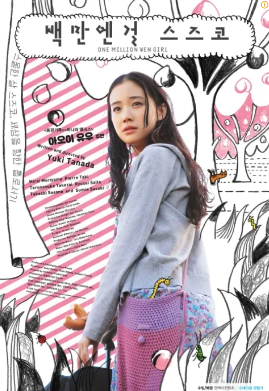

인생 영화 - 백만엔걸 스즈코

유튜브에서 우연히 추천을 받아 보게 된 영화로, 악역 한 명 없이 매우 잔잔한 영화입니다.
스즈코는 항상 자신을 알아보는 사람이 없는 사람으로 이사를 가서 100만엔을 벌면 다른 곳으로 이사갔습니다.
100만엔쯤 벌면, 아는 사람들, 정드는 사람들이 생겼고 스즈코는 그게 싫었던 것 같습니다.
이 영화에서 특히 인상 깊었던 것은 스즈코가 이사 다닐 때 마다 들고다니던 커튼입니다.
항상 이사다니면서 딱히 짐을 챙기지 않던 스즈코였지만, 커튼 하나는 꼭 챙기고 다녔는데요,
영화를 볼 땐, 왜 저것만 들고다니나 하는 의문이 있었는데 이제 와서 생각해보면 스즈코도 연고없는 곳에 스스로 선택해서 간 것이지만, 사실은 마음붙일 곳이 필요한 외로운 스즈코를 표현하는 장치였던 것 같습니다.
일본 영화는 다 제 취향이 아니라서 잘 안 봤었는데, 잔잔하고 영상미가 좋아서 기억에 남는 영화입니다.
(사실 아오이 유우가 너무 예뻐서 걍 재밌었음)